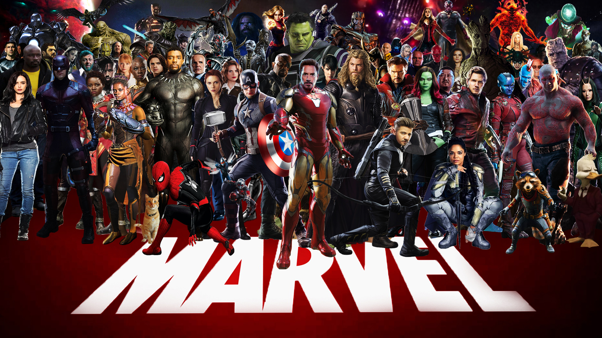
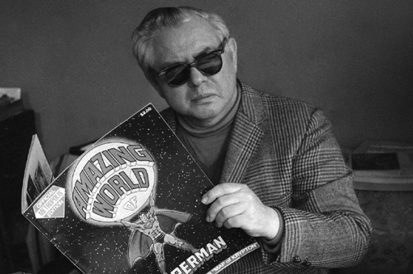

Marvel Cinematic Universe
მარველის კინემატოგრაფიული სამყარო (MCU) არის მედია ფრენჩაიზი და საერთო სამყარო, რომელიც გარშემორტყმულია სუპერგმირების ფილმებისა და სატელევიზიო სერიების სერიით, რომელიც წარმოებულია მარველის სტუდიოს მიერ. ის დაფუძნებულია პერსონაჟებზე, რომლებიც წარმოადგენენ მარველის კომიქსებს. MCU დაიწყო 2008 წელს "რკინის კაცით", რომელმაც მაყურებელს გააცნო ტონი სტარკი, რომელიც რობერტ დაუნი უმცროსმა შეასრულა. ფრენჩაიზი დღემდე გაფართოვდა მრავალი ფილმისა და სატელევიზიო სერიების საშუალებით, რომლებიც მოიცავს ისეთ პერსონაჟებს, როგორებიცაა კაპიტანი ამერიკა, თორი, შავი ქვირივი, ჰალკი, და სპაიდერმენი. MCU ცნობილია თავისი ურთიერთდაკავშირებული ისტორიებით, სადაც პერსონაჟები და მოვლენები ერთმანეთთან გადაკვეთს სხვადასხვა ფილმებსა და სერიებში. მარველის კინემატოგრაფიული სამყაროს (MCU) ფუძემდებელი არის მარველ სტუდიოები, რომლის მთავარ როლშია კევინ ფეიჯი. ის არის მარველ სტუდიოების პრეზიდენტი და მრავალი ფილმის მთავარი პროდიუსერი. MCU ეფუძნება მარველის კომიქსების პერსონაჟებსა და ისტორიებს, რომლებიც შექმნილია სხვადასხვა კომიქსების ავტორებისა და მხატვრების მიერ, მათ შორის არიან სტენ ლი და ჯეკ კირბი.
სტენ ლი

სტენ ლი(Stan Lee) დაიბადა 1922 წლის 28 დეკემბერს, ნიუ-იორკში. ის იყო ერთ-ერთი ყველაზე ცნობილი კომიქსების მწერალი და პროდიუსერი, რომელმაც ძალიან დიდი გავლენა მოახდინა კომიქსების ინდუსტრიაზე. ლი მუშაობდა Marvel Comics-ისთვის და შექმნა მრავალი ცნობილი გმირი, მათ შორის სპაიდერმენი, ექს-ადამიანები, ირონ მანი, თეთრი სამეფო და მრავალი სხვა. მისი კარიერა დაიწყო 1939 წელს და მალე გახდა Marvel-ის მთავარი შემოქმედებითი ძალა. სტენ ლი გამოირჩეოდა უნიკალური სტილით, რომელიც ხასიათდებოდა შურისძიების, მეგობრობის და კომიკური ელემენტების კომბინაციით. ლიმ ასევე ითამაშა მნიშვნელოვანი როლი Marvel-ის მულტიმედიური გაფართოების პროცესში, რომელიც მოიცავდა კინო და ტელევიზიის პროექტებს. მისი გამოჩენა ფილმებში და ტელეშოუებში გახდა მისი პოპულარობის დამატებითი წყარო. სტენ ლი გარდაიცვალა 2018 წლის 12 ნოემბერს, თუმცა მისი მემკვიდრეობა და გავლენა კომიქსების სამყაროში განაგრძობს არსებობას.
კევინ ფეიჯი

კევინ ფეიჯი (Kevin Feige) არის ამერიკელი ფილმის პროდიუსერი, რომელიც ცნობილია Marvel Cinematic Universe-ის (MCU) განვითარების და მართვის გამო. ის დაიბადა 1973 წლის 2 მარტს, ვუდსბოროში, ნიუ-ჯერსიში. ფეიჯმა დაიწყო თავისი კარიერა 2000-იან წლებში Marvel-ის კომიქსების ფილმების წარმოებაში, ხოლო 2007 წელს მან ჩამოაყალიბა Marvel Studios-ს ხელმძღვანელობა. მისი ხელმძღვანელობით Marvel Studios-მა შექმნა უამრავი წარმატებული ფილმი, რომლებიც დღემდე ერთ-ერთ ყველაზე მაღალშემოსავლიან ფილმებად ითვლება კინოინდუსტრიაში. ფეიჯის სტრატეგიული ხედვა და კრეატიული გადაწყვეტილებები აერთიანებს კომიქსების ისტორიებს და გმირებს, რაც მნიშვნელოვნად აუმჯობესებს ფილმების კომპლექსურობას და ეფექტურობას. მისი წარმატების წყალობით, MCU-ს ფილმები აერთიანებს მრავალ მნიშვნელოვან პერსონაჟსა და ამბებს, რაც უამრავი მაყურებლის დაინტერესებას იწვევს. კევინ ფეიჯი მიიჩნევა თანამედროვე კინოს ერთ-ერთ ყველაზე გავლენიან ადამიანად, განსაკუთრებით კომიქსების ფილმების სფეროში.
ჯეკ კირბი

ჯეკ კირბი (Jack Kirby), სახელი რიკარდო სპერლინგი, არის ერთ-ერთი ყველაზე გავლენიანი კომიქსების მხატვარი და მწერალი, რომელიც ცნობილია თავისი განსაკუთრებული სტილით და ინოვაციური ხედვით. ის დაიბადა 1917 წლის 28 აგვისტოს, ნიუ-იორკში და გარდაიცვალა 1994 წლის 6 თებერვალს. კირბიმ დაიწყო თავისი კარიერა 1930-იან წლებში და მისი ყველაზე ცნობილი ნამუშევრები დაკავშირებულია Marvel Comics-თან და DC Comics-თან. მას ეკუთვნის მრავალი ცნობილი გმირი, მათ შორის კაპიტანი ამერიკა, ქერო და მუტანტების ჯგუფი იქს-ადამიანები. ჯეკ კირბის სტილი გამოირჩევა დინამიური მოძრაობით, ნატურალისტური დეტალებით და უნიკალური კრეატიული კონცეფციებით. მისი ნამუშევრები დაგეგმილი და მდიდარია ვიზუალური და თემატური შინაარსით, რაც ხდის მას კომიქსების ხელოვნების ერთ-ერთ ხატებრივ წარმომადგენლად. კირბი ასევე იყო კომიქსების ფორმატის განვითარების მნიშვნელოვანი პიროვნება, რომელმაც შექმნა ახალი ნარატივული სტრუქტურები და ფორმატები. მისი მემკვიდრეობა დღესაც აღიარებულია, და ის ითვლება კომიქსების ინდუსტრიის ერთ-ერთ ყველაზე მნიშვნელოვან ფიგურად.
დისის კომიქსები

DC Comics არის ერთ-ერთი უდიდესი და ყველაზე ცნობილი კომიქსების გამომცემლობა, რომელიც დაარსდა 1934 წელს. მისი ისტორია და პერსონაჟები გამოირჩევა მრავალფეროვნებით და დიდებულობით. DC Comics თავდაპირველად ცნობილი იყო როგორც National Allied Publications. სუპერმენი (Superman) იყო პირველი ცნობილი გმირი, რომელიც 1938 წელს კომიქსებში გამოჩნდა, რაც კომიქსების "ოქროს ხანის" დასაწყისად ითვლება. პერსონაჟები DC-ს სამყაროში მრავალი ცნობილი პერსონაჟი არსებობს, მათ შორის: ბეტმენი (Batman) - ღამის მბრძოლი, რომელიც დასდევს კრიმინალებს. ვონდერვუმანი (Wonder Woman) - ძლიერი მებრძოლი და მშვიდობის დამცველი. ფლეში (The Flash) - სუპერ სისწრაფის მქონე გმირი. მწვანე ნათება (Green Lantern) - მწვანე რგოლის მქონე გმირი, რომელსაც შეუძლია წარმოსახვითი ენერგიის ფორმირება. DC Comics-ის პერსონაჟები ხშირად გვხვდება დიდ ეკრანებზე. გამოსარჩევი ფილმები არის "ბეტმენის დაბრუნება", "სუპერმენის სიკვდილი" და "Justice League". DC-ს ასევე აქვს მრავალი წარმატებული ტელესერიალი, როგორიცაა "Arrow", "The Flash", "Gotham" და "Titans". DC-ის ანიმაციური ფილმები და სერიალები პოპულარულია, მათ შორის "Batman: The Animated Series". კომიქსების სერია DC Comics-ის სერიები მრავალფეროვანია, მათ შორის: "Detective Comics" - აქ წარმოდგენილია ბეტმენის ამბები. "Action Comics" - სუპერმენის ისტორია. "Justice League" - გუნდური კომიქსები, სადაც გაერთიანდებიან სხვადასხვა გმირები.
მარკ უაიზერი
მარკ უაიზერი (Malcolm Wheeler-Nicholson) არის ამერიკელი კომიქსების გამომცემელი და მწერალი, რომელიც ცნობილია DC Comics-ის ერთ-ერთ დამფუძნებლად. უაიზერი აქტიური იყო 1930-იანი წლების დასაწყისში, როდესაც კომიქსები ჯერ კიდევ ახალი იყო. ის იყო ერთ-ერთი პირველი, ვინც კომიქსების როგორც ფორმატის პოტენციალი აღიქვა. 1934 წელს მან დაარსა პირველი კომიქსების გამომცემლობა სახელად „National Allied Publications“, რაც მოგვიანებით გადაიქცა DC Comics-ად. იგი იყო პირველი, ვინც გამოაცხადა კომიქსების სერიები და წამოაყენა იდეა, რომ პერსონაჟები ერთი და იმავე სამყაროში არსებობდნენ, რაც საფუძვლად დაედო DC Comics-ის მრავალსერიებს. უაიზერმა შექმნა რამდენიმე მნიშვნელოვანი პერსონაჟი და სერია, თუმცა მისი ყველაზე მნიშვნელოვანი წვლილი იყო DC Comics-ის დაარსება და განვითარება. მას ასევე ჰქონდა გავლენა კომიქსების ინდუსტრიის ფორმირებაზე, რაც მომავალში გამოიწვია მრავალფეროვანი კომიქსების და სუპერგმირების გამოჩენა.
ჯო შუსტერი
ჯო შუსტერი (Joe Shuster) არის ცნობილი ამერიკელი კომიქსების მხატვარი და შემქმნელი, რომელიც ყველაზე მეტად ცნობილია სუპერმენის თანაავტორობით, რომელიც კომიქსების ისტორიაში ერთ-ერთი ყველაზე ცნობილი პერსონაჟია. შუსტერმა ბავშვობაში დაიწყო მხატვრობა და გამოიყენა კომიქსების სფეროში . მან მეგობარ ჯერი სიგელთან ერთად დაიწყო მუშაობა, რაც საბოლოოდ სუპერმენის შექმნის მიზეზი გახდა. 1938 წელს, შუსტერმა და სიგელმა შექმნეს სუპერმენი, რომელიც პირველად გამოჩნდა „Action Comics“ #1-ში. ეს კომიქსი გამოჩნდა როგორც სუპერგმირების ჟანრის დასაწყისი და სუპერმენი სწრაფად გახდა პოპულარული პერსონაჟი. ჯო შუსტერი და ჯერი სიგელი აღიარებულნი არიან როგორც სუპერგმირების ჟანრის მამები, ხოლო მათი ნამუშევარი დღემდე მნიშვნელოვანი გავლენა ახდენს კომიქსების ინდუსტრიასა და პოპულარული კულტურაზე. შუსტერის მიმართ მნიშვნელოვანი პატივისცემა და აღიარება მოხდა მისი გარდაცვალების შემდეგ, და დღევანდელ დღესაც, სუპერმენი და მისი მემკვიდრეობა მყარად შენარჩუნებულია.
მარვინ უოლფმანი
მარვინ უოლფმანი (Marv Wolfman) არის ცნობილი კომიქსების სცენარისტი და მხატვარი, რომელიც მუშაობს DC Comics-ისა და Marvel Comics-ისთვის. ის ცნობილია თავისი ძლიერი პერსონაჟების განვითარებით და სიუჟეტების შექმნით. მარვინ უოლფმანი დაიბადა 1946 წლის 13 ივლისს. მისი კარიერა დაიწყო 1970-იანი წლების დასაწყისში, როდესაც დაიწყო მუშაობა Marvel Comics-ზე. ცნობადი სამუშაოები "Teen Titans": უოლფმანი ყველაზე მეტად ცნობილი გახდა "Teen Titans" სერიის ავტორობით, სადაც მან შექმნა მრავალი ცნობილი პერსონაჟი, მათ შორის "რეივენი" (Raven) და "სტარფაიერი" (Starfire). "Crisis on Infinite Earths": ეს არის მისი ერთ-ერთი ყველაზე ცნობილი და გავლენიანი პროექტი, რომელიც გამოირჩევა მრავალფეროვანი და კომპლექსური სიუჟეტით, რომელმაც მთლიანად შეცვალა DC Comics-ის სამყაროს ისტორია. "Blade": მან ასევე შექმნა ვამპირებზე მონადირე პერსონაჟი "Blade", რომელმაც შემდგომში დიდი პოპულარობა მოიპოვა ფილმებსა და სხვა მედიაში. სტილი და გავლენა მარვინ უოლფმანი ცნობილია თავისი სიღრმისეულ და ემოციურ ისტორიებით, რაც მის პერსონაჟებს მეტად საინტერესოს ხდის. მისი გავლენა კომიქსების ინდუსტრიაზე მას დიდი პატივითა და აღიარებით გამოირჩევა.